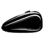

GAS 
There will be occasions when you’ll need to clean out your motorcycle fuel tank. If your bike has been sitting for a long time without being started, for instance, there could be a build up of debris in the motorcycle fuel tank. Cleaning it out properly will ensure that no harmful materials get into your engine to damage it. Maintenance will also prevent clogging in the fuel lines.
Step 1 - Cleaning RustThe best way to clean rust out of the fuel tank is to do so manually with the tank taken off the bike. You’ll need a handful of ball bearings and half a gallon of diesel. Make sure you use diesel and not regular gas for this task. Shake the tank vigorously with all the hoses blocked off and the fuel cap on.
The diesel works in a different way to gas as the rust particles will be suspended in it, making it easier to dump them out later. Be aware that it can take quite a lot of shaking in order to fully clean out the motorcycle fuel tank. The effort, however, will be more than worthwhile.
Step 2 - Flushing the TankWhen you flush the tank out prior to putting it back on the bike, use gasoline instead of diesel. Before you do this, however, shake the tank to be certain you’ve got all the ball bearings out. Failure to do so will mean you’ll end up with a blocked or clogged fuel line.
Make sure you don’t have any open flames around when flushing the tank and don’t smoke any cigarettes. Gasoline is extremely flammable and you don’t want to set your fuel tank on fire. A little care can go a long way.
Step 3 - Removing the TankThere are a number of basic techniques for removing a motorcycle fuel tank and if you follow them thoroughly, you’ll manage the task quite easily. Much depends on the make of your motorcycle but you’ll definitely need to drain the tank first to avoid gasoline spilling all over the place and over you.
With the tank drained, take care to unhook the gas lines or vacuum lines from the motorcycle fuel tank. Knowing what components are on your bike will make this a lot easier. See if your motorcycle also comes with fuel valves that are linked to the gas tank. If there are any, remove them before you begin work on cleaning the motorcycle fuel tank. The same applies to the low fuel sensor although not all bikes have these.
Step 4 - Blocking the TankYour motorcycle fuel tank needs to be well blocked before you put in the ball bearings and the diesel. The best way to manage this is to put short lengths of hose over all of the openings and use heavy clamps to block off the ends of the hoses. Make sure they’re all tightly blocked, or the gasoline and ball bearings will just spill out.
Step 5 - Replacing the TankWhen you replace the tank prior to filling it, ensure all the hose, valves, and sensors are properly fitted and that the hoses are tightly secured. If they’re not, it could lead to gasoline dripping onto a hot engine which could cause a fire.
By following these simple steps, you will be able to clean your motorcycle's fuel tank in no time.